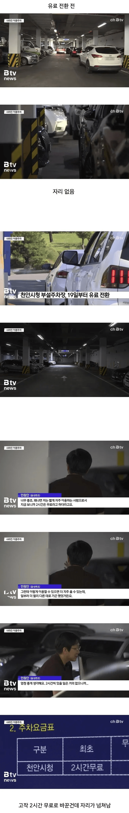

주차장 2시간 무료 전환의 좋은 사례
댓글
외부 주차는 원래가 유료다
양심 뒤1진새1끼들은 무료라고 생각하고 저짓하는것
자리가 넘쳐나는 이유? 두가지가 있는데
첫번째로 바로 앞에 붙어있는 무료 주차장으로 싹 빠짐
그 근처 모든 주차장이 유료화 한게 아니라 민원인들을 위해서 시청앞 주차장만 유료화 한거라 무료주차공간 아직 많음
두번째로 저 당시 천안 환경안전 아카데미에서 삼성현장 노가다꾼 교육을 했었는데 주차장을 제공하지 않고 시청 주차장에 차 대면 된다고 안내함
삼성 현장 피크때 그 많은 노가다꾼들 교육받겠다고 몰려가서 주차해놓는 경우가 많고 교육끝나고 근처 식당에서 회식까지 하는 경우가 많으니 장기주차가 기본값이었음
저기 시청주차장 자리도 조오오오온나 많은데 그 맞은편이 불당동 상가들이 위치해있어서 맨날 차들 가득가득함ㅅㅂ
나도 주변에 주차할 때 없어서 유료주차장 갔는데 1시간?인가는 무료라서 그냥 나옴